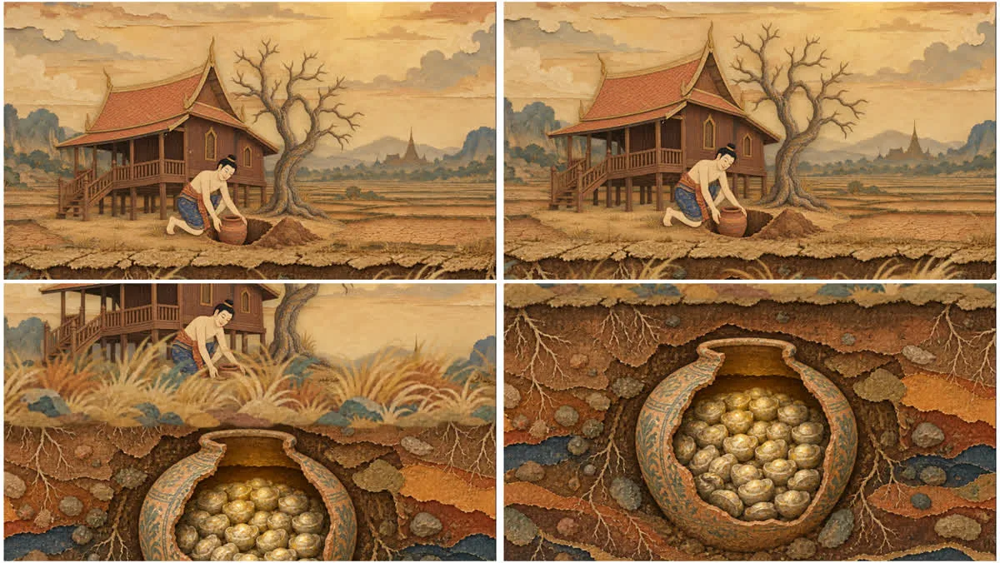
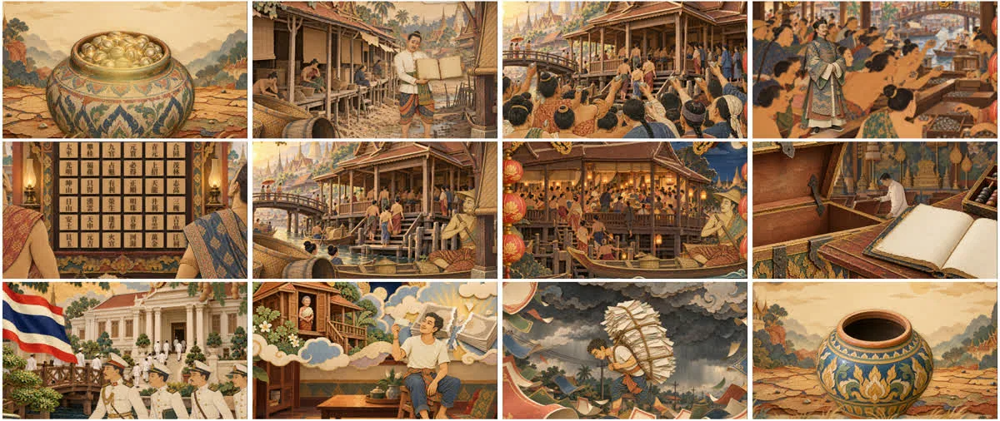

Motion Graphic
Motion ที่ใส่เพื่อให้เรื่องเดินหน้า ไม่ใช่ใส่เพื่อความสวยอย่างเดียว ทำเป็นแม่แบบเพื่อให้ทุกตอนใช้เวลาน้อยลงและหน้าตาเหมือนกัน

คลิปความรู้ที่มีแต่ภาพนิ่งกับเสียงบรรยาย คนดูเลื่อนผ่านตั้งแต่วินาทีแรก งานชุดนี้ใช้ Motion ช่วยเล่าเรื่อง ทั้งฉากภาพวาดจิตรกรรมไทยที่กล้องเคลื่อนได้ การ์ดตัวเลข และพาดหัวข่าวซ้อนกัน ทำเป็นระบบเพื่อให้ทุกตอนออกมาในโทนเดียวกัน
คลิปความรู้ไม่ได้แพ้เพราะเนื้อหา แต่แพ้ตั้งแต่ภาพแรก
เนื้อหาดีแค่ไหน ถ้าภาพไม่ขยับ คนดูก็ไม่อยู่ฟังจนถึงจุดที่น่าสนใจ
 ภาพนิ่ง 1 ภาพ
ภาพนิ่ง 1 ภาพ
ฉากเดียวกัน เมื่อกล้องเป็นคนเล่าภาพนิ่งกับตัวหนังสือ ถูกเลื่อนผ่าน
ภาพนิ่งที่มีเสียงพูดทับดูเหมือนสไลด์ คนดูตัดสินใจเลื่อนออกก่อนเรื่องจะเริ่มเข้มข้น
ตัวเลขสำคัญ ผ่านไปเร็วจนจำไม่ได้
ตัวเลขอย่าง "5 แสนบาทต่อเดือน เทียบกับ 16,000 ล้านบาท" ถ้าแค่พูดผ่าน ๆ คนดูจะไม่ทันเห็นว่ามันต่างกันมากแค่ไหน
ภาพ AI ที่ดูออกว่าเป็น AI
ภาพจาก AI ที่ไม่ได้กำกับมักมีหน้าตาเหมือนกันไปหมด คนดูจำได้ทันทีและเลิกเชื่อเนื้อหาไปด้วย
ทำทีละตอน สไตล์เลยไม่นิ่ง
ถ้าออกแบบใหม่ทุกตอน ช่องจะไม่มีหน้าตาของตัวเอง และใช้เวลาต่อคลิปมากเกินกว่าจะทำต่อเนื่องได้
เทคนิคที่ใช้ซ้ำได้ — เอกสาร ตัวเลข และตัวหนังสือ
ตัดมาเป็นชิ้นสั้น ๆ ทีละเทคนิค จากงานคลิปยาวของโปรเจกต์ ShotDeck แต่ละชิ้นเป็นแม่แบบ เปลี่ยนแค่เนื้อหาก็ใช้กับตอนใหม่ได้
ฉาก 2.5D — ภาพวาดจิตรกรรมไทยที่กล้องเคลื่อนได้
จากเรื่อง "ไหเงินใต้ดิน" ใช้สไตล์ภาพเดียวตลอดทั้งเรื่อง แล้วให้กล้องเป็นตัวเล่า
วิธีทำงาน — 5 จังหวะ จากบทถึงคลิปที่พร้อมลง
ส่วนที่ต้องใช้สายตาคนทำเอง ส่วนที่ซ้ำ ๆ ปล่อยให้เครื่องทำ

บทและเสียงบรรยาย
อัดเสียงพากย์ไทยทีละบรรทัด แล้วให้ระบบถอดเสียงกลับมาตรวจว่าอ่านถูกคำ ก่อนจะเอาไปวางภาพ
กำกับภาพให้เป็นชุดเดียว
ล็อกสไตล์ภาพทั้งเรื่องก่อน แล้วสร้างภาพแต่ละฉากตามนั้น เกรดสีให้เข้ากัน ไม่ปล่อยภาพที่ดูออกว่าเป็น AI ผ่านไป
จัดวางใน Remotion Studio
ตั้งจังหวะการ์ด ตัวหนังสือ และการเคลื่อนกล้องให้ตรงกับเสียง ดูพรีวิวสดได้ทันทีโดยยังไม่ต้องเรนเดอร์
เรนเดอร์บนเครื่องที่เปิดทิ้งไว้
สั่งเรนเดอร์ไปที่เครื่องเซิร์ฟเวอร์ที่บ้าน คลิปยาวราว 1 นาทีใช้เวลาประมาณ 8 นาที ระหว่างนั้นทำอย่างอื่นต่อได้
ตรวจก่อนปล่อย
เช็กว่าตัวหนังสือไม่ล้นพื้นที่ปลอดภัย ไม่มีเฟรมกะพริบ และเสียงดังเท่ากันทุกบรรทัด ก่อนเข้าคิวโพสต์
สี่บทเรียนจากการตัดคลิปจริง
ส่วนใหญ่ได้มาจากการดูคลิปที่ทำออกไปแล้วรู้สึกว่า "ยังไม่ใช่"

ช็อตที่สวยที่สุด ไม่ใช่ช็อตที่ดีที่สุดเสมอไป
Showreel เวอร์ชันแรกเลือกช็อตที่ภาพสวยและมีตัวหนังสือชัด แต่พอเรียงต่อกันกลับดูเหมือนสไลด์ ไม่มีอะไรบอกว่านี่คืองาน Motion
กล้องเคลื่อนแรงสุดตอนต้นฉาก
ฉากภาพวาดส่วนใหญ่เคลื่อนกล้องแรงในช่วงแรก แล้วค่อย ๆ ช้าลง ถ้าตัดจากกลางฉากจะได้แต่ช่วงที่ภาพเกือบนิ่ง
ภาพแต่ละฉากสวย แต่รวมกันแล้วไม่เป็นเรื่องเดียว
สร้างภาพทีละฉากโดยไม่มีกติกากลาง ได้ภาพที่สีและลายเส้นต่างกันจนคนดูรู้สึกว่ากำลังดูคนละเรื่อง
เสียงพากย์ไทยอ่านผิด และดังไม่เท่ากัน
เสียงสังเคราะห์อ่านชื่อเฉพาะและคำไทยบางคำผิด และแต่ละบรรทัดดังไม่เท่ากัน ฟังแล้วสะดุด